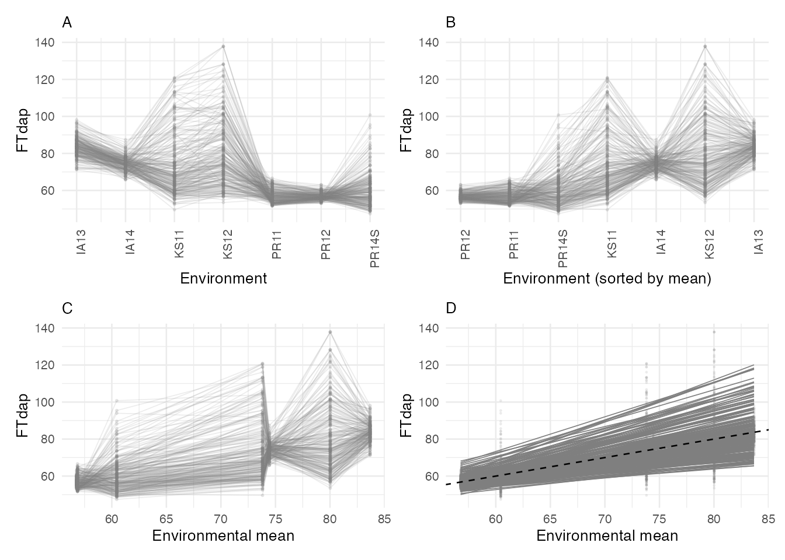
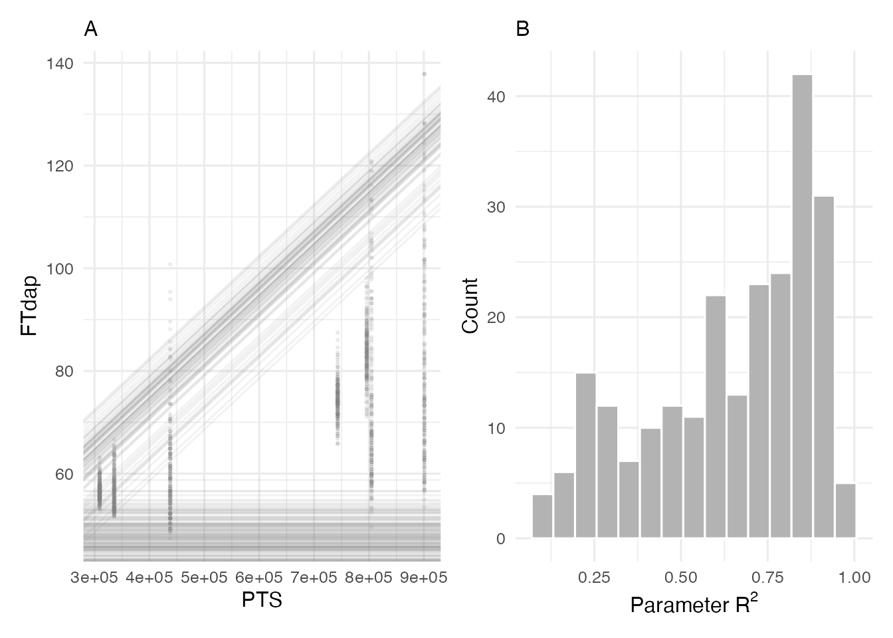
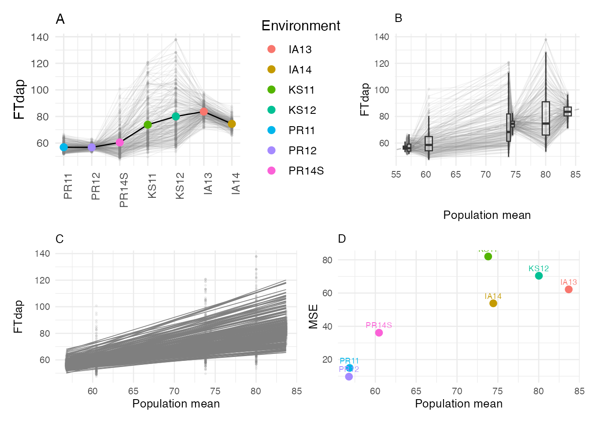

Reaction Norms and Slope-Intercept Analysis
reaction-norms.RmdOverview
A reaction norm describes how a genotype’s phenotype changes across environments. In the context of multi-environment trials, reaction norms visualize each genotype’s response as a line plotted against an environmental index. The classical framework is the Finlay-Wilkinson regression, where individual genotype performance is regressed on the environmental mean or on a CERIS-derived environmental parameter (kPara).
This vignette demonstrates how to:
- Compute and visualize reaction norms using both environmental means and CERIS-identified parameters.
- Extract slope-intercept statistics that characterize genotype stability and responsiveness.
- Interpret pairwise distance plots for genotype comparison.
Data Setup
Load the sorghum dataset and prepare the trait data through the full
CERIS pipeline. We use flowering time in days after planting
(FTdap) as the trait of interest.
library(runCERIS)
d <- load_crop_data("sorghum")
exp_trait <- prepare_trait_data(d$traits, "FTdap")
head(exp_trait)
#> line_code env_code Yobs
#> 1 E10 IA13 89.73960
#> 2 E100 IA13 84.28180
#> 3 E101 IA13 83.53581
#> 4 E102 IA13 78.66140
#> 5 E103 IA13 92.39830
#> 6 E104 IA13 87.26640Compute environmental means by merging trait averages with environment metadata:
env_mean_trait <- compute_env_means(exp_trait, d$env_meta)
head(env_mean_trait)
#> env_code meanY env_notes lat lon PlantingDate TrialYear Location
#> 1 PR12 56.77317 2 18.0373 -66.7963 2011-12-12 2011 PR
#> 2 PR11 56.85371 1 18.0373 -66.7963 2010-12-04 2010 PR
#> 3 PR14S 60.45186 7 18.0373 -66.7963 2014-06-05 2014 PR
#> 4 KS11 73.81378 3 39.1836 -96.5717 2011-06-08 2011 KS
#> 5 IA14 74.44027 6 42.0308 -93.6319 2014-06-10 2014 IA
#> 6 KS12 80.02100 4 39.1836 -96.5717 2012-06-07 2012 KSRun the CERIS exhaustive search to identify the critical
environmental window. We set max_days = 80 to keep
computation manageable:
ceris_result <- ceris_search(
env_mean_trait = env_mean_trait,
env_params = d$env_params,
params = c("DL", "GDD", "PTT", "PTR", "PTS"),
max_days = 80,
loo = FALSE,
progress = NULL
)Identify the best window and compute the corresponding environmental parameter (kPara) for each environment:
best <- ceris_identify_best(ceris_result, params = c("DL", "GDD", "PTT", "PTR", "PTS"))
best
#> $param_name
#> [1] "PTS"
#>
#> $dap_start
#> [1] 9
#>
#> $dap_end
#> [1] 16
#>
#> $correlation
#> [1] 0.9587
#>
#> $neg_log_p
#> [1] 3.1866
env_mean_trait <- compute_window_params(
env_mean_trait = env_mean_trait,
env_params = d$env_params,
dap_start = best$dap_start,
dap_end = best$dap_end,
params = best$param_name
)
head(env_mean_trait)
#> env_code meanY env_notes lat lon PlantingDate TrialYear Location
#> 1 PR12 56.77317 2 18.0373 -66.7963 2011-12-12 2011 PR
#> 2 PR11 56.85371 1 18.0373 -66.7963 2010-12-04 2010 PR
#> 3 PR14S 60.45186 7 18.0373 -66.7963 2014-06-05 2014 PR
#> 4 KS11 73.81378 3 39.1836 -96.5717 2011-06-08 2011 KS
#> 5 IA14 74.44027 6 42.0308 -93.6319 2014-06-10 2014 IA
#> 6 KS12 80.02100 4 39.1836 -96.5717 2012-06-07 2012 KS
#> kPara
#> 1 309321.4
#> 2 335746.3
#> 3 437819.6
#> 4 804678.1
#> 5 742952.3
#> 6 900995.8The env_mean_trait data frame now contains a
kPara column — the CERIS-identified environmental covariate
summarized over the best window.
Reaction Norm Plot
The plot_reaction_norm() function produces a four-panel
display:
- Top-left: Reaction norms plotted against the environmental mean (meanY).
- Top-right: Reaction norms plotted against kPara.
- Bottom-left: Distribution of environmental means.
- Bottom-right: Distribution of kPara values.
plot_reaction_norm(exp_trait, env_mean_trait, trait = "FTdap")
The top panels show each genotype as a line connecting its observed values across environments. Steeper lines indicate genotypes that are more responsive to environmental variation, while flatter lines indicate more stable genotypes. Comparing the two top panels reveals whether the CERIS-derived kPara provides a cleaner separation of environments than the simple mean.
Slope-Intercept Analysis
The slope_intercept() function regresses each genotype’s
observations on either the environmental mean, the CERIS parameter
(kPara), or both. This yields a slope (responsiveness) and intercept
(baseline performance) for each genotype.
Using kPara
res_para <- slope_intercept(exp_trait, env_mean_trait, type = "kPara")
head(res_para)
#> line_code Intcp_para_adj Intcp_para Slope_para R2_para
#> 1 E10 79.9955 34.0257 1e-04 0.7994
#> 2 E100 69.9480 56.5860 0e+00 0.4218
#> 3 E101 72.5409 42.4125 0e+00 0.9748
#> 4 E102 66.4430 44.3077 0e+00 0.9007
#> 5 E103 87.9326 18.6031 1e-04 0.7686
#> 6 E104 77.3758 30.5624 1e-04 0.7862The output contains:
-
Intcp_para_adj: Intercept adjusted to the mean kPara value. -
Intcp_para: Raw intercept from the regression on kPara. -
Slope_para: Slope of the regression on kPara. -
R2_para: Coefficient of determination for the kPara regression.
Using Environmental Mean
res_mean <- slope_intercept(exp_trait, env_mean_trait, type = "mean")
head(res_mean)
#> line_code Intcp_mean Slope_mean
#> 1 E10 79.9955 1.5008
#> 2 E100 69.9480 0.5886
#> 3 E101 72.5409 1.0550
#> 4 E102 66.4430 0.8231
#> 5 E103 87.9326 2.1402
#> 6 E104 77.3758 1.4956This returns Intcp_mean and Slope_mean —
the classical Finlay-Wilkinson regression coefficients.
Both Together
res_both <- slope_intercept(exp_trait, env_mean_trait, type = "both")
head(res_both)
#> line_code Intcp_mean Slope_mean Intcp_para_adj Intcp_para Slope_para R2_para
#> 1 E10 79.9955 1.5008 79.9955 34.0257 1e-04 0.7994
#> 2 E100 69.9480 0.5886 69.9480 56.5860 0e+00 0.4218
#> 3 E101 72.5409 1.0550 72.5409 42.4125 0e+00 0.9748
#> 4 E102 66.4430 0.8231 66.4430 44.3077 0e+00 0.9007
#> 5 E103 87.9326 2.1402 87.9326 18.6031 1e-04 0.7686
#> 6 E104 77.3758 1.4956 77.3758 30.5624 1e-04 0.7862Using type = "both" returns all columns from both
regressions in a single data frame, which is convenient for comparing
the two approaches.
Slope-Intercept Plot
The plot_slope_intercept() function produces a two-panel
display showing the relationship between intercept (baseline
performance) and slope (responsiveness). The first argument must be the
trait data merged with the kPara values from
env_mean_trait:
exp_trait_merged <- merge(
exp_trait,
env_mean_trait[, c("env_code", "kPara")],
by = "env_code"
)
plot_slope_intercept(
exp_trait_merged = exp_trait_merged,
res_para = res_para,
trait = "FTdap",
kpara_name = best$param_name
)
The left panel shows regression lines for each genotype against kPara, while the right panel displays the slope versus adjusted intercept. Genotypes in different quadrants have distinct adaptation profiles.
Pairwise Distance Plot
The plot_pairwise_dist() function produces a four-panel
display that characterizes the pairwise distances between environments
and between genotypes:
plot_pairwise_dist(exp_trait, env_mean_trait, trait = "FTdap")
These panels help identify clusters of similar environments or genotypes and highlight outliers that behave differently from the rest.
Interpreting Stability and Responsiveness
The slope from the Finlay-Wilkinson regression (or its CERIS-enhanced counterpart) is the primary indicator of genotype adaptation:
| Slope | Interpretation |
|---|---|
| > 1 | Responsive: performs disproportionately well in favorable environments but poorly in unfavorable ones. |
| ~ 1 | Average: tracks the environmental mean proportionally. |
| < 1 | Stable: less sensitive to environmental variation; maintains more consistent performance. |
A high R-squared value indicates that the environmental index (mean or kPara) explains most of the genotype’s variation across environments. Low R-squared suggests that other factors (e.g., biotic stress, soil heterogeneity) are driving the genotype’s response.
When comparing the mean-based and kPara-based regressions, an improvement in R-squared with kPara indicates that the CERIS-identified environmental window captures GxE variation more effectively than the overall environmental mean.
summary(res_both$R2_para)
#> Min. 1st Qu. Median Mean 3rd Qu. Max.
#> 0.1007 0.4597 0.7189 0.6456 0.8502 0.9748Genotypes with high R-squared under kPara but low R-squared under the environmental mean are those whose performance is specifically driven by the critical environmental factor identified by CERIS.